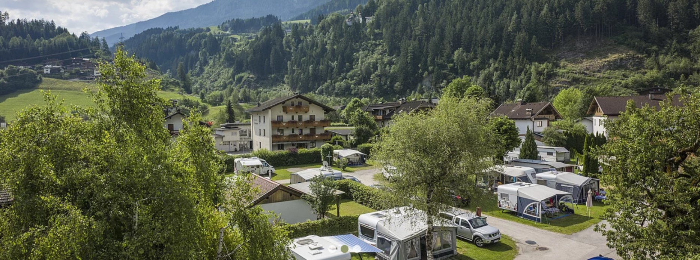

16. Campingdorf Hofer, Hippach
47.228658, 11.886396

Eredeti leírás: Campingdorf Hofer. A GPX fájl utolsó pontjai az osztrák Tirolban, a Ziller folyó völgyében, Hippach településnél találhatók. A Zillertal Tirol egyik leghíresebb völgye, magas alpesi környezetben, népszerű sí és túracélpont.
addr:city: Zell am Ziller
addr:housenumber: 33
addr:postcode: 6280
addr:street: Gerlosstraße
caravans: yes
email: info@campingdorf.at
fee: yes
name: Campingdorf Hofer
phone: +43 5282 2248
shower: yes
source: Bing
tents: yes
toilets: yes
tourism: camp_site
url: https://www.campingdorf.at/
website: https://www.campingdorf.at/
Érdekességek:
A Campingdorf Hofer a Ziller völgyében jó bázispont, mert a Zillertal egyszerre nyújt völgyfenéki, könnyen bejárható szakaszokat és magas alpesi környezetet. A völgy szerkezete tipikus tiroli, hosszanti tengelyre fűzött településekkel, amelyek a folyó mentén kapcsolódnak egymáshoz.
A kempingnél a praktikum a lényeg, itt már a nap zárása és a másnapi indulás előkészítése kerül fókuszba. A Zillertal népszerűsége abból is adódik, hogy négy évszakos régió, a hegyek közelsége miatt a természet és az infrastruktúra erősen összefonódik.
A GPX állomásként ez logikus lezárás, mert a nap során a tórégióktól fokozatosan jutottatok el a tiroli völgy világába, és a végén egy stabil, jól elérhető völgyi szállás jellegű pontot kaptok.